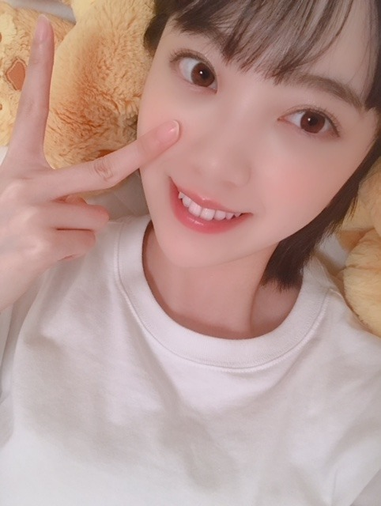
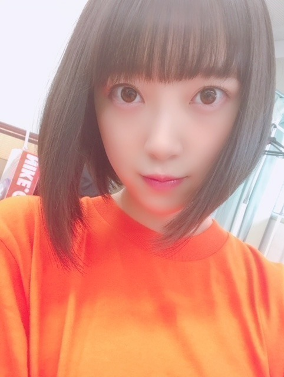
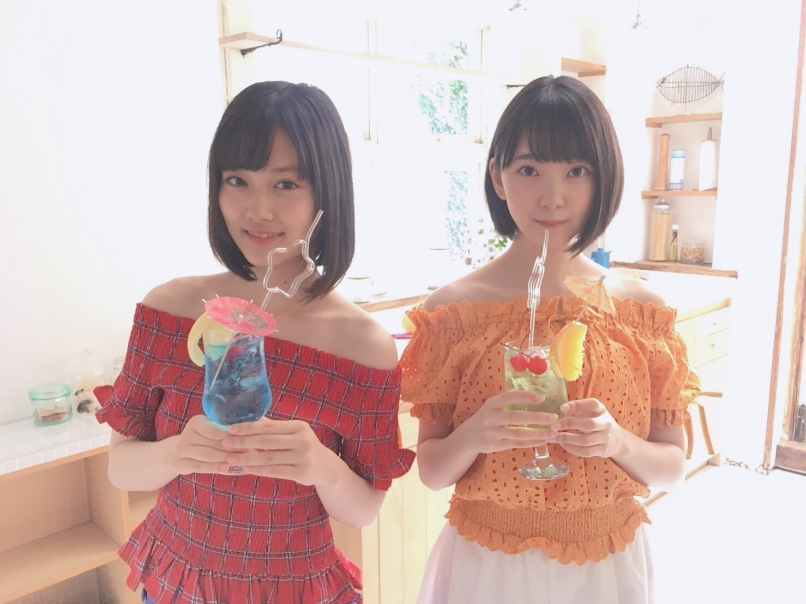
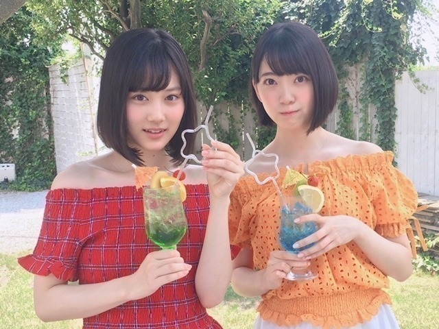
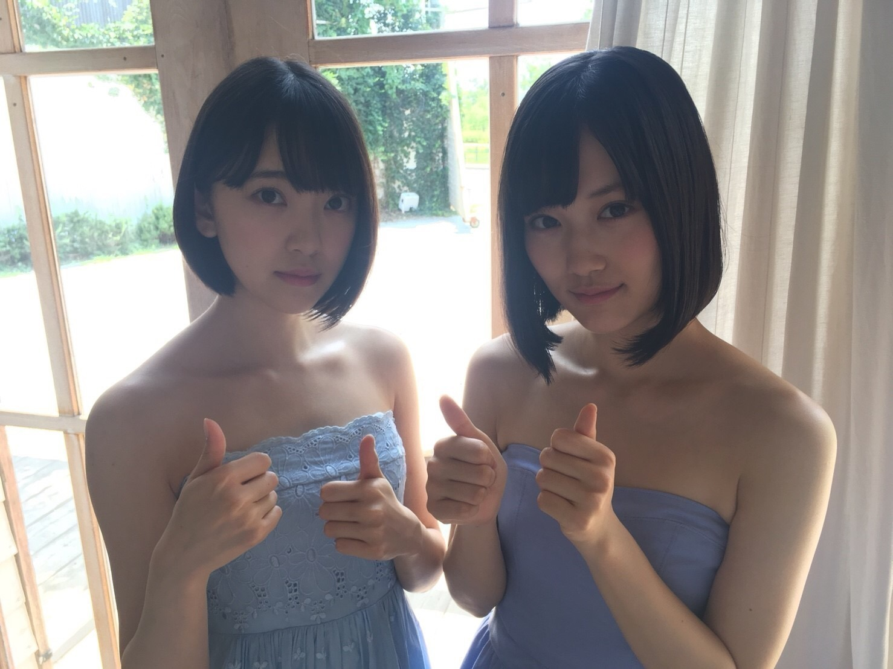

2018/0811Satデニムに守られる
こんばんは！
親知らずもだいぶ治りつつあり
やっとご飯が噛めて安心しています...
まだ本調子ではないので明日の握手会でも
あまり話せない&声が小さいかもですが
体調は元気なので！！
お待ちしています。

疲れてすぐベッドにダイブしてしまう今日この頃。
そこから起き上がるのになかなか時間が
かかるのよね...

サイリウムカラーはオレンジx白です♪

またオレンジ着てる。笑
衣装でも多いです！ありがたや！
白もよく着るからなー。


BOMB発売中！美月と表紙。よろしく！
最近は、
万引き家族
カメラを止めるな
コードブルー
未来のミライ
を観ました。皆さんは何か観ましたか〜？
カメラを止めるな
ゲラゲラ笑っちゃった。笑
ではまた〜
2018/08/11 18:00
コメント(475)
堀ちゃんは｢あの頃、君を追いかけた｣は劇場に観に行きますかー？(*´∀｀)
未央奈のオフショル最高！オレンジすごい似合ってる！てかこんなに色っぽかったっけ？ドキドキする！恋だ、これは恋だぞ！
歌声も最高に可愛いよ！癒される。秋元先生、ソロ曲よろしくお願いします。
歌声も最高に可愛いよ！癒される。秋元先生、ソロ曲よろしくお願いします。
わかるわ～
俺もベッドにダイブしたらもう一生起きたくねぇ！
って思うもん(笑)
俺もベッドにダイブしたらもう一生起きたくねぇ！
って思うもん(笑)
こんばんは
親知らずが治りつつあって、
良かったですね。
ご飯が噛めること、、
当たり前のことって素晴らしい。。
その写真と一緒の755の動画、観ました
\(//∇//)\
いい意味でヤバいです♡
心が乾いた私にとって、オアシスの水
すごく癒されました♪
ありがたや〜！
かわいかったぁ〜(*´꒳`*)
着ることも多い衣装も、
好きな気持ちが、引き寄せる？
オレンジや白色が好きな未央奈さんの♪
近々で、7月に
「ワンダー~君は太陽~」を観ました。
未央奈さんが観た中に、
コードブルー
未来のミライ
は、特に私の観たい映画です！
4歳の甥っ子が今いるし、
娘と観に行きたいなぁ。未来のミライは。
おやすみなさい
またね〜
親知らずが治りつつあって、
良かったですね。
ご飯が噛めること、、
当たり前のことって素晴らしい。。
その写真と一緒の755の動画、観ました
\(//∇//)\
いい意味でヤバいです♡
心が乾いた私にとって、オアシスの水
すごく癒されました♪
ありがたや〜！
かわいかったぁ〜(*´꒳`*)
着ることも多い衣装も、
好きな気持ちが、引き寄せる？
オレンジや白色が好きな未央奈さんの♪
近々で、7月に
「ワンダー~君は太陽~」を観ました。
未央奈さんが観た中に、
コードブルー
未来のミライ
は、特に私の観たい映画です！
4歳の甥っ子が今いるし、
娘と観に行きたいなぁ。未来のミライは。
おやすみなさい
またね〜
未央奈～ こんにちは
ブログ更新ありがとうございます。
「BOMB」発売、表紙はもちろん中味も含めて、予告の期待を裏切らない写真ばかりでしたね。オフショルとオレンジ・白と色にもこだわり‥‥。美月とのコンビも最高ですね。
さて、歯の方は大丈夫かな？ 明日の個握は、またカードが飛び出すのかな？ まぁ、元気ということなので、一安心ですが、くれぐれも体調管理には気をつけてくださいね。「体調の自己管理注意」、略して「ジコチュー」ですからね。
立秋も過ぎたのでそろそろ涼しくなってほしいところですが香、まだまだ暑い日が続きます。特に今年の岐阜県は暑い。気をつけてくださいね。
今日、ナゴヤドームのチケット、ゲットしました。先行なのにとんでもない高いところのようです。でも、安心しては入れるのが何よりです。今から楽しみでなりません。
ブログ更新ありがとうございます。
「BOMB」発売、表紙はもちろん中味も含めて、予告の期待を裏切らない写真ばかりでしたね。オフショルとオレンジ・白と色にもこだわり‥‥。美月とのコンビも最高ですね。
さて、歯の方は大丈夫かな？ 明日の個握は、またカードが飛び出すのかな？ まぁ、元気ということなので、一安心ですが、くれぐれも体調管理には気をつけてくださいね。「体調の自己管理注意」、略して「ジコチュー」ですからね。
立秋も過ぎたのでそろそろ涼しくなってほしいところですが香、まだまだ暑い日が続きます。特に今年の岐阜県は暑い。気をつけてくださいね。
今日、ナゴヤドームのチケット、ゲットしました。先行なのにとんでもない高いところのようです。でも、安心しては入れるのが何よりです。今から楽しみでなりません。
応援してます！
堀未央奈さん、こんばんは。
私はコードブルーを見ましたよ。
堀未央奈さんはコードブルーを見て、どう感じましたか？
私はコードブルーを見ましたよ。
堀未央奈さんはコードブルーを見て、どう感じましたか？
未央奈ちゃん、ひろっしーです！コメント投稿489回目です！
前回はブログ「ヒルナンデス！」にモバメと雑誌「BOMB」と755の感想を書きました！
時間→「No.657 2018年8月11日 00:29」
ブログ更新ありがとうございます！
こんばんは！1枚目の写真を見る限り親知らずの腫れ全然分からないね！本当に良かった～！早く元気一杯にご飯食べられると良いですね！サイリウムカラーの白TとオレンジTがとても似合っていて、Tシャツも嬉しいだろうな～！
・疲れてすぐベッドにダイブしてしまう
・そこから起き上がるのに時間がかかる
→その気持ちめっちゃ分かります！
僕はソファーにダイブするタイプですが(笑)
「BOMB」のオフショット可愛すぎるって～！そういえば確かにオレンジ着てる時多いね(笑)
白も含め、未央奈ちゃんのサイリウムカラーが浸透している証拠だと思います！僕も嬉しい！あと、やっぱり水色ワンピースは肌の露出度が特に高くてドキドキします！結構ギリですね！
映画は「忍びの国」以来観ていません(謝)
それでは、明日の京都での握手会頑張ってね！
ここまで読んで頂きありがとうございました！
毎日お仕事お疲れ様です！体調にはくれぐれも気を付けて頑張ってくださいね！
おやすみおな～！
前回はブログ「ヒルナンデス！」にモバメと雑誌「BOMB」と755の感想を書きました！
時間→「No.657 2018年8月11日 00:29」
ブログ更新ありがとうございます！
こんばんは！1枚目の写真を見る限り親知らずの腫れ全然分からないね！本当に良かった～！早く元気一杯にご飯食べられると良いですね！サイリウムカラーの白TとオレンジTがとても似合っていて、Tシャツも嬉しいだろうな～！
・疲れてすぐベッドにダイブしてしまう
・そこから起き上がるのに時間がかかる
→その気持ちめっちゃ分かります！
僕はソファーにダイブするタイプですが(笑)
「BOMB」のオフショット可愛すぎるって～！そういえば確かにオレンジ着てる時多いね(笑)
白も含め、未央奈ちゃんのサイリウムカラーが浸透している証拠だと思います！僕も嬉しい！あと、やっぱり水色ワンピースは肌の露出度が特に高くてドキドキします！結構ギリですね！
映画は「忍びの国」以来観ていません(謝)
それでは、明日の京都での握手会頑張ってね！
ここまで読んで頂きありがとうございました！
毎日お仕事お疲れ様です！体調にはくれぐれも気を付けて頑張ってくださいね！
おやすみおな～！
更新ありがとうございます！
親知らずもう少しですね！
頑張って下さい、明日の京都個握は、
いけないけど、１２月の全握は、
受験のパワーもらいに行きます✨
コードブルー面白いですよね✨
映画好きなの一緒です(笑)
未央奈さんのお陰で
受験に向けて勉強できます！
いつも感謝してます
親知らずもう少しですね！
頑張って下さい、明日の京都個握は、
いけないけど、１２月の全握は、
受験のパワーもらいに行きます✨
コードブルー面白いですよね✨
映画好きなの一緒です(笑)
未央奈さんのお陰で
受験に向けて勉強できます！
いつも感謝してます
未央奈～☆☆
ご飯が噛めるようになってよかった～～
完治までもう少しだね。
治ったらステーキでお祝いだー笑
それまでがんばってね！
最近、色んな色の未央奈を見てる気がする。
しかもどの色も似合ってるところが凄いと思う。
未央奈の笑顔が素敵すぎる。
よし、頑張ろう！
ご飯が噛めるようになってよかった～～
完治までもう少しだね。
治ったらステーキでお祝いだー笑
それまでがんばってね！
最近、色んな色の未央奈を見てる気がする。
しかもどの色も似合ってるところが凄いと思う。
未央奈の笑顔が素敵すぎる。
よし、頑張ろう！
白×オレンジね！
サイリウムちゃんと振っとくね！
タオルも〜！
ライブまであとちょっと！
うちわ作ろうかな〜？悩み中…
ばいいっ
ほーりーみーおーなーさーんーブーローグー更ー新ーあーりーがーとーうー
更新ありがとう！
お疲れ様でした！
親知らずが治癒して良かったな～
いつもお体に気をつけて下さいね
はい、もう、はい、BOMBを買います
いつも頑張ってね
大好き
お疲れ様でした！
親知らずが治癒して良かったな～
いつもお体に気をつけて下さいね
はい、もう、はい、BOMBを買います
いつも頑張ってね
大好き
みおなブログ更新ありがとう！
最近映画で見たのはミスターインクレディブルファミリーだよー！
最初のやつからの続きでめちゃくちゃ面白かったから見てみて！
ディズニー好きなら尚更おすすめやね(^^)
最近映画で見たのはミスターインクレディブルファミリーだよー！
最初のやつからの続きでめちゃくちゃ面白かったから見てみて！
ディズニー好きなら尚更おすすめやね(^^)
未央奈
明日の握手会頑張ってね
今回は仕事場で応援してる
SONYでした❗(*´∀`)♪
明日の握手会頑張ってね
今回は仕事場で応援してる
SONYでした❗(*´∀`)♪
やぁ(・∀・)ノ未央奈ちゃん♡こんばんは！ブログありがとう！
りょーへー(R.N.イナダウアーびーむ)だよ♪
ごめん！眠い！今日はまともなコメント出来る気がせん！明日ね！
明日の握手会、たのしんでっ！
#毎日コメント
#今日もお疲れ様
#今日は
#朝から晩まで
#盛りだくさんだったなぁ
#明日も楽しみおな♡
#おやすみおな(;_;)/~~~
りょーへー(R.N.イナダウアーびーむ)だよ♪
ごめん！眠い！今日はまともなコメント出来る気がせん！明日ね！
明日の握手会、たのしんでっ！
#毎日コメント
#今日もお疲れ様
#今日は
#朝から晩まで
#盛りだくさんだったなぁ
#明日も楽しみおな♡
#おやすみおな(;_;)/~~~
未央奈お疲れ様。
暑いし忙しいから体調に
気を付けや～
ただいつみても可愛いすぎる。
暑いし忙しいから体調に
気を付けや～
ただいつみても可愛いすぎる。
全部日本映画じゃん!!!・・・苦笑m(__)mさすがゾンビファンｗだけあって早くも、カメ止め!観るとは(＾O)＝3秋に出るクライマックスに突入するウォーキング・デッド９とフィアーザ・ウォーキング・デッド４も、お見逃しなく・・・＼＾o＾／
最近観たのは、
ジュラシックワールド・
炎の王国とハン・ソロ・スターウォーズ・ストーリーだけ観て、最近出た海ドラが
傑作揃いだから最近観た、 名作から２５年後の続編の幕が開くツインピークス・リミテッドはオススメ!!＼＾o＾／特に後半のある話が衝撃的な内容で驚きが止まらない(ノ゜O゜)ノ～
他に、Ｘファイル・２０１８とストレンジャーシングスとゲームオブスローンズを見直し週間です・・・m(__)m
それじゃ来週も体調に気をつけていきましょうー・・・ (^O^)/～
最近観たのは、
ジュラシックワールド・
炎の王国とハン・ソロ・スターウォーズ・ストーリーだけ観て、最近出た海ドラが
傑作揃いだから最近観た、 名作から２５年後の続編の幕が開くツインピークス・リミテッドはオススメ!!＼＾o＾／特に後半のある話が衝撃的な内容で驚きが止まらない(ノ゜O゜)ノ～
他に、Ｘファイル・２０１８とストレンジャーシングスとゲームオブスローンズを見直し週間です・・・m(__)m
それじゃ来週も体調に気をつけていきましょうー・・・ (^O^)/～
STU48「暗闇」MVを撮った 枝優花監督の作品
「少女邂逅(ショウジョカイコウ)」を観ました。
新宿は 再再延長になって17日まで。今月は地方上映(舞台挨拶あり)あるそうです 心に傷ができるような ささるタイプの映画です。キズが治ってゆく時間も楽しめるような
あと、タイのアカデミーで史上最多記録をつくったタイ映画を 来月観に行きます。& 気になっているのは「ブリグズビー・ベア」
「少女邂逅(ショウジョカイコウ)」を観ました。
新宿は 再再延長になって17日まで。今月は地方上映(舞台挨拶あり)あるそうです 心に傷ができるような ささるタイプの映画です。キズが治ってゆく時間も楽しめるような
あと、タイのアカデミーで史上最多記録をつくったタイ映画を 来月観に行きます。& 気になっているのは「ブリグズビー・ベア」
お大事にな未央奈〜
映画めっちゃ見てるな笑
俺こないだ僕のヒーローアカデミアってやつの映画見た！
感動したー
映画めっちゃ見てるな笑
俺こないだ僕のヒーローアカデミアってやつの映画見た！
感動したー
堀ちゃん可愛い〜(´∀｀)
毎日努力してる結果が容姿に現れとる(*´꒳`*)
ダイエットし過ぎで体調崩さないようにね(^_−)−☆
毎日努力してる結果が容姿に現れとる(*´꒳`*)
ダイエットし過ぎで体調崩さないようにね(^_−)−☆
日本映画だとこの先公開する、累が、気になるm(__)m
このところ、ポップカルチャー好きにはたまらない、 夏フェス級の大イベントだったコミコン２０１８の
数々の最新映画と新作ドラマとアニメと漫画と小説とキャラクターフィギュアと最新グッズからアートまで最新作のニュースだらけでこっちも気になる・・・(*_*)
最近は、フィアーザ・ウォーキング・デッド３とツインピークス・リミテッドと
Ｘファイル・２０１８と
ストレンジャーシングスとか主に海ドラの新作観てる!!掘りさんは、カメ止め！早くも観たからにはドラマ版、死霊のはらわた・リターンズとかゾンビドラマも？観てるのかなｗアッシュも映画以来頑張ってますよ笑
来週も体調に気をつけて、 頑張りましょうー・・・(＾O)＝3
このところ、ポップカルチャー好きにはたまらない、 夏フェス級の大イベントだったコミコン２０１８の
数々の最新映画と新作ドラマとアニメと漫画と小説とキャラクターフィギュアと最新グッズからアートまで最新作のニュースだらけでこっちも気になる・・・(*_*)
最近は、フィアーザ・ウォーキング・デッド３とツインピークス・リミテッドと
Ｘファイル・２０１８と
ストレンジャーシングスとか主に海ドラの新作観てる!!掘りさんは、カメ止め！早くも観たからにはドラマ版、死霊のはらわた・リターンズとかゾンビドラマも？観てるのかなｗアッシュも映画以来頑張ってますよ笑
来週も体調に気をつけて、 頑張りましょうー・・・(＾O)＝3
こんばんは！未央奈！
デニムに守られる。ん？日常の話？映画の話？
おぉ。親知らず治ってきたんだね！
こっちもそれが聞けて安心です。
明日京都の個握かぁ。うらやましい！
ついこの前大阪ライブだったのにまた関西に行ったんだね。忙しい！
でも未央奈はそんな素振りを見せずにニコニコしてるんだろうなぁ。と思うとほっこりしちゃう。(^-^)
ほんと。お疲れ様です！
暑いから体力の減りが激しいよね。。
この前のリクエスト動画は最高だったよん♪
ドゥータ君になりたかった！！笑
起こしてー！って言ってくれたら全力で起こしますよ？笑
良い笑顔。✨
オレンジだぁー。
いつもライブでちゃーんとオレンジx白にしてまっせ！
生誕Tシャツ楽しみ。
未央奈が選んだデザインならファンは大好きだから安心して伸び伸びと考えてね。笑
またオレンジ着てる。笑
って言おうとしたら言われた。笑っ
かわいいです！ありがたや！
そだねー。
ん！ふと写真の棚の方見たら魚の形したオブジェあってびっくり！うちにもある！というか小学生のときに作ったことある！
はい。当たり障りのない話でした。✋
わー、かわいい写真ばっかりだなぁ。
未央奈ってほんとかわいいよ！！
グッドのときの顔はおもろい。割とツボ。ニヤニヤ。
よろしくされました！買います！
いーなー。
全部観たい映画ばっかり。
カメラを止めるなは友達と観ようって話してたとこ。
ゲラゲラ笑えるんか。そりゃ楽しみ。笑
ホラー苦手でも観た方がいいんだもんね！
こっちは結構前にジュラシックワールド2観に行ったよ。恐竜〜。って感じ。以上！
今気になってるのはオーシャンズ8かな。
今日から休みだから見逃した映画いっぱい借りてきちゃった。笑
あ、そうそう。モバメ見て少し感動しました。
また１つ未央奈の夢が叶えられそうなんだね。
おめでとう！！
楽しみにしてますね♪♪
こっちも行くためにはやらなきゃいけないことがあるのでがんばります！
ではまた〜！おやすみおな〜〜！
デニムに守られる。ん？日常の話？映画の話？
おぉ。親知らず治ってきたんだね！
こっちもそれが聞けて安心です。
明日京都の個握かぁ。うらやましい！
ついこの前大阪ライブだったのにまた関西に行ったんだね。忙しい！
でも未央奈はそんな素振りを見せずにニコニコしてるんだろうなぁ。と思うとほっこりしちゃう。(^-^)
ほんと。お疲れ様です！
暑いから体力の減りが激しいよね。。
この前のリクエスト動画は最高だったよん♪
ドゥータ君になりたかった！！笑
起こしてー！って言ってくれたら全力で起こしますよ？笑
良い笑顔。✨
オレンジだぁー。
いつもライブでちゃーんとオレンジx白にしてまっせ！
生誕Tシャツ楽しみ。
未央奈が選んだデザインならファンは大好きだから安心して伸び伸びと考えてね。笑
またオレンジ着てる。笑
って言おうとしたら言われた。笑っ
かわいいです！ありがたや！
そだねー。
ん！ふと写真の棚の方見たら魚の形したオブジェあってびっくり！うちにもある！というか小学生のときに作ったことある！
はい。当たり障りのない話でした。✋
わー、かわいい写真ばっかりだなぁ。
未央奈ってほんとかわいいよ！！
グッドのときの顔はおもろい。割とツボ。ニヤニヤ。
よろしくされました！買います！
いーなー。
全部観たい映画ばっかり。
カメラを止めるなは友達と観ようって話してたとこ。
ゲラゲラ笑えるんか。そりゃ楽しみ。笑
ホラー苦手でも観た方がいいんだもんね！
こっちは結構前にジュラシックワールド2観に行ったよ。恐竜〜。って感じ。以上！
今気になってるのはオーシャンズ8かな。
今日から休みだから見逃した映画いっぱい借りてきちゃった。笑
あ、そうそう。モバメ見て少し感動しました。
また１つ未央奈の夢が叶えられそうなんだね。
おめでとう！！
楽しみにしてますね♪♪
こっちも行くためにはやらなきゃいけないことがあるのでがんばります！
ではまた〜！おやすみおな〜〜！
更新ありがとう
個握取れたからみおなに合いに行けます楽しみです❗
コードブルー見る予定です
個握取れたからみおなに合いに行けます楽しみです❗
コードブルー見る予定です
堀ちゃん、いや映画見様(*´▽｀*)
この間、映画を凄い頻繁に観に行ってる友達とたまにしか会わないからその場にいたメンバーも含めて一緒にご飯に行ったんだけど、相変わらず映画館に通ってるらしく、今やってる映画の話になって(´･ω･｀)
その人は、気になった洋画をまず字幕で観て、その後時間が合えば吹替でも観てって人で、１つは勉強の為というのもあるけど、元々映画が好きというのもあって、気になったものなら洋画だけじゃなく、邦画も観るし、アニメは聞いた事がないけど幅広く観てるから、オススメな何？って聞くと、俺にはめちゃめちゃその時にやってるアニメを観に行けばって言ってくる、あとは実写化した作品を観に行って感想を教えてって言ってくる(。-`ω-)
以前、１回だけ、一緒に映画を観に行きたくて連絡した時なんて、その映画はもう字幕も吹替も観たから大丈夫ですって断られたし、一緒に観たいなら今丁度映画館に向かってるからどこどこの映画館まで来てって、そこそこ距離のある映画館を指定してきたからこちらからお断りさせていただきました☆
(めちゃめちゃ振られたみたいになってるけど同性だし)
映画館にも色々なこだわりがあるらしく、俺はそこまで詳しくないからわからないけど、ジャンルによって行く映画館が違うらしい(。-`ω-)
でも、2019年に池袋に出来る新しい映画館は凄いらしく、それが出来たら一緒に行こうとは言っておいた(*´ω｀*)
まぁ、俺が一方的に入口らへんで待っていればいつか来るはずだから、その時には実現するはず☆
出掛けたついでに映画館に寄って観たい作品の上映時間を確認するんだけど、全然合わなくて断念してるから、この夏のうちに１つか２つは観ておきたいです☆
親知らず、やっと痛みが治まってきたようで良かったです♪
ご飯がきちんと食べられないなんて、俺だったらストレスでしかない( ;∀;)
夏の方がお腹空くし(/ω＼)
疲れてそのままダイブ、可愛いですねん(*´ω｀*)
次の日もなかなか立ち上がらないの可愛いです(*´ω｀*)
今日は筋肉痛で朝起き上がれなかった(´･ω･｀)
本当は朝一で用事があったけど、休める日ないからキャンセルして昼過ぎまで寝て、その後ご飯食べてからお風呂洗って、静かにしてた(*´▽｀*)
arさんとBOMBさんの感想はもうしちゃったからここではしません☆
明日の握手会、楽しんでね(*´ω｀*)
名古屋、楽しみにしております(*'▽')ﾉ
慶次郎でした。
この間、映画を凄い頻繁に観に行ってる友達とたまにしか会わないからその場にいたメンバーも含めて一緒にご飯に行ったんだけど、相変わらず映画館に通ってるらしく、今やってる映画の話になって(´･ω･｀)
その人は、気になった洋画をまず字幕で観て、その後時間が合えば吹替でも観てって人で、１つは勉強の為というのもあるけど、元々映画が好きというのもあって、気になったものなら洋画だけじゃなく、邦画も観るし、アニメは聞いた事がないけど幅広く観てるから、オススメな何？って聞くと、俺にはめちゃめちゃその時にやってるアニメを観に行けばって言ってくる、あとは実写化した作品を観に行って感想を教えてって言ってくる(。-`ω-)
以前、１回だけ、一緒に映画を観に行きたくて連絡した時なんて、その映画はもう字幕も吹替も観たから大丈夫ですって断られたし、一緒に観たいなら今丁度映画館に向かってるからどこどこの映画館まで来てって、そこそこ距離のある映画館を指定してきたからこちらからお断りさせていただきました☆
(めちゃめちゃ振られたみたいになってるけど同性だし)
映画館にも色々なこだわりがあるらしく、俺はそこまで詳しくないからわからないけど、ジャンルによって行く映画館が違うらしい(。-`ω-)
でも、2019年に池袋に出来る新しい映画館は凄いらしく、それが出来たら一緒に行こうとは言っておいた(*´ω｀*)
まぁ、俺が一方的に入口らへんで待っていればいつか来るはずだから、その時には実現するはず☆
出掛けたついでに映画館に寄って観たい作品の上映時間を確認するんだけど、全然合わなくて断念してるから、この夏のうちに１つか２つは観ておきたいです☆
親知らず、やっと痛みが治まってきたようで良かったです♪
ご飯がきちんと食べられないなんて、俺だったらストレスでしかない( ;∀;)
夏の方がお腹空くし(/ω＼)
疲れてそのままダイブ、可愛いですねん(*´ω｀*)
次の日もなかなか立ち上がらないの可愛いです(*´ω｀*)
今日は筋肉痛で朝起き上がれなかった(´･ω･｀)
本当は朝一で用事があったけど、休める日ないからキャンセルして昼過ぎまで寝て、その後ご飯食べてからお風呂洗って、静かにしてた(*´▽｀*)
arさんとBOMBさんの感想はもうしちゃったからここではしません☆
明日の握手会、楽しんでね(*´ω｀*)
名古屋、楽しみにしております(*'▽')ﾉ
慶次郎でした。
未央奈のオレンジすこ
みおなのかわいいさよ
最後の写真セクシー！
未央奈～こんばんは！
ぽてとです！
ご飯噛めるように少しずつなって良かったね！
早く全快できますように！
明日、握手会、券はあるんやけど
やはり仕事休めそうになくて(泣)
ほんま悔しいけど次に会える楽しみということで
頑張るね(泣)
じゃあまたね！
ぽてと
ぽてとです！
ご飯噛めるように少しずつなって良かったね！
早く全快できますように！
明日、握手会、券はあるんやけど
やはり仕事休めそうになくて(泣)
ほんま悔しいけど次に会える楽しみということで
頑張るね(泣)
じゃあまたね！
ぽてと
親知らず治ってきてよかった！
長引いてたみたいで心配だったよ～
グラビア、オレンジ×白×オフショルで
最強やね、オフショル会長！(^o^)
BOMB早く見なければ！
最近はジュラシックワールドと
50回目のファーストキス観たよー◎
長引いてたみたいで心配だったよ～
グラビア、オレンジ×白×オフショルで
最強やね、オフショル会長！(^o^)
BOMB早く見なければ！
最近はジュラシックワールドと
50回目のファーストキス観たよー◎
腫れひいてきたんですね！！
良かったです
明日？今日？握手会行きます！！！
もう本当に楽しみにしていたので堀さんに会えるの楽しみすぎます！！！
声小さくてもなんでも堀さんに会えるだけで幸せですよ
わかります！
自分もすぐ横になっちゃって、
そこから起き上がるのにすごく時間かかって、
自分の場合、だいたい寝落ちしてしまうのです…笑
自分は最近何にも観ていないです…
握手会では浴衣着ますか？
着て欲しいです浴衣
良かったです
明日？今日？握手会行きます！！！
もう本当に楽しみにしていたので堀さんに会えるの楽しみすぎます！！！
声小さくてもなんでも堀さんに会えるだけで幸せですよ
わかります！
自分もすぐ横になっちゃって、
そこから起き上がるのにすごく時間かかって、
自分の場合、だいたい寝落ちしてしまうのです…笑
自分は最近何にも観ていないです…
握手会では浴衣着ますか？
着て欲しいです浴衣
ナゴヤドームワクワクとまらんぜうぇーい┌(_Д_┌ )┐れ。BOMB(σ・∀・)σｹﾞｯﾂ!堀殿×美月はん発見( Д ) ﾟ ﾟ表紙&ポスター&クリアファイルに堀殿が載っててうれぴーぽー(o￣◎￣)oバブゥ♡オフショル堀殿お綺麗やわぁ(〃ω〃)あたまりんごさん堀殿もよきよきピーナッツ(≧∇(≧∇(≧∇(≧∇≦)∇≦)∇≦)∇≦)ｷｬｰ♡
堀ちゃん
おはようございます
親知らずの痛み治まってきたみたいで良かったです
自分も最近は風呂入った後にベッドにダイブしてそのまま1時間くらい寝てしまう事が多いですよ（夜中の1時くらいに堀ちゃんの755の通知音で目が覚めて助かってます笑）
多忙だとは思いますが、頑張って下さい
今日から自分はお盆休みなので、いつもコメント書く時間帯が遅いのですが、しばらくの間は昼間にコメントが出来るかもしれないので、またブログ書いて下さい（基本的に寝る前にブログ更新を確認してコメントしてます）
今日の握手会は行けないですが頑張って下さい（録画したヒルナンデス観ます）
でもビッグサイトの握手会にはお邪魔させて頂きますので、まだ先ですがよろしくお願いします
ありがとうございました
おはようございます
親知らずの痛み治まってきたみたいで良かったです
自分も最近は風呂入った後にベッドにダイブしてそのまま1時間くらい寝てしまう事が多いですよ（夜中の1時くらいに堀ちゃんの755の通知音で目が覚めて助かってます笑）
多忙だとは思いますが、頑張って下さい
今日から自分はお盆休みなので、いつもコメント書く時間帯が遅いのですが、しばらくの間は昼間にコメントが出来るかもしれないので、またブログ書いて下さい（基本的に寝る前にブログ更新を確認してコメントしてます）
今日の握手会は行けないですが頑張って下さい（録画したヒルナンデス観ます）
でもビッグサイトの握手会にはお邪魔させて頂きますので、まだ先ですがよろしくお願いします
ありがとうございました
更新ありがとう！
オレンジ可愛いね！！！！
個握も全握も行きたい‼︎
行ければいいな…。
オレンジ可愛いね！！！！
個握も全握も行きたい‼︎
行ければいいな…。
ブログ更新ありがと〜♪
今日の握手会行くよ〜！よろしくね！
映画、見に行きたいな〜、、
今日の握手会行くよ〜！よろしくね！
映画、見に行きたいな〜、、
未央奈ちゃん更新ありがとー！
親知らずが治りつつあるということで、こちらも安心しております！
早く完全に治して、ご飯いっぱい食べないとね！！
未央奈ちゃんといえばオレンジのイメージがある。
やっぱ似合うなぁ(^o^)
握手会頑張って！
あまり無理はしないでね(^_^)
親知らずが治りつつあるということで、こちらも安心しております！
早く完全に治して、ご飯いっぱい食べないとね！！
未央奈ちゃんといえばオレンジのイメージがある。
やっぱ似合うなぁ(^o^)
握手会頑張って！
あまり無理はしないでね(^_^)
堀ちゃん お久しぶりです
ほっぺたの腫れは大分良くなったのかなぁ
BOMBも見たよー 夏らしい堀ちゃんと美月ちゃん
二人ともいい写真です、アイドルだねぇー
堀ちゃんのアヒル口が大好き
ほっぺたの腫れは大分良くなったのかなぁ
BOMBも見たよー 夏らしい堀ちゃんと美月ちゃん
二人ともいい写真です、アイドルだねぇー
堀ちゃんのアヒル口が大好き
未来のミライ見ました～
今日の握手会、頑張ってね～
今日の握手会、頑張ってね～
ドゥータくんが、うらやましいッス！
ブログ更新ありがとうございます。
可愛い動画も、ありがとうございます
ウキウキして、眠れなくなっちゃいますが・・・
ヒルナンデス！
「何の職業の古着？」の二問目かな。
魔女宅のキキの服に見えたのは、オイラだけ？
ほぼほぼ、ワイプ画面を見てた気がします
生駒ちゃん卒コンのライブビュー以来、映画館には行ってないなー。
舞台は、よく行くのですが。もっぱら、BSで見てます。
昨日、今更ながら、「寄生獣」「ジョンウィック」を一挙放送で見ました
「カメラをとめるな」は、話題沸騰ですね。見たいです。
ちょっと違うけど、「ゾンビランド」も笑えた！
続編制作が決まったようです。
暑い日が続きます。体調には気をつけてね。
ブログ更新ありがとうございます。
可愛い動画も、ありがとうございます
ウキウキして、眠れなくなっちゃいますが・・・
ヒルナンデス！
「何の職業の古着？」の二問目かな。
魔女宅のキキの服に見えたのは、オイラだけ？
ほぼほぼ、ワイプ画面を見てた気がします
生駒ちゃん卒コンのライブビュー以来、映画館には行ってないなー。
舞台は、よく行くのですが。もっぱら、BSで見てます。
昨日、今更ながら、「寄生獣」「ジョンウィック」を一挙放送で見ました
「カメラをとめるな」は、話題沸騰ですね。見たいです。
ちょっと違うけど、「ゾンビランド」も笑えた！
続編制作が決まったようです。
暑い日が続きます。体調には気をつけてね。
あざと３姉妹はオフショルがよく似合う(^^)
未央奈ー！ブログ更新ありがとう！！今日俺も未来のミライ見に行くよ！一緒だね！今度話そうね！！握手会ムリしないで頑張ってね！BOMB見たよ！美月との表紙可愛かったー！未央奈って夏服めちゃんこ似合うね笑今日もがんばろー！
(・∀・)ｲｲﾈ!!
親知らず早く治るといいね。
オレンジねー、いいよねー
とか言いつつ
最近黄色着ること多いなー
あとはシンプルめのシャツ。
柄シャツも好きだけど、最近シンプル〜
握手会楽しんでね。あまり無理せずね。
映画は細田守監督作品とジブリが好き〜
オレンジねー、いいよねー
とか言いつつ
最近黄色着ること多いなー
あとはシンプルめのシャツ。
柄シャツも好きだけど、最近シンプル〜
握手会楽しんでね。あまり無理せずね。
映画は細田守監督作品とジブリが好き〜
カメラを止めるなって面白いの？
僕のヒーローアカデミア見に行ったけどみおなは見なさそうな映画かなあ笑笑面白かったよ是非！
僕のヒーローアカデミア見に行ったけどみおなは見なさそうな映画かなあ笑笑面白かったよ是非！
こんにちは。日々お疲れ様です。
最近見た映画は「志乃ちゃんは自分の名前が言えない」ですね。監督は湯浅弘章さん。本作も「大人への近道」のMVと同じ沼津市での撮影だそうです。光線の使い方が独特で、一見して湯浅氏の手になるものと分かります。
上映回数少なくなってきましたが、今夏おすすめしたい1本です。
最近見た映画は「志乃ちゃんは自分の名前が言えない」ですね。監督は湯浅弘章さん。本作も「大人への近道」のMVと同じ沼津市での撮影だそうです。光線の使い方が独特で、一見して湯浅氏の手になるものと分かります。
上映回数少なくなってきましたが、今夏おすすめしたい1本です。
俺はBleachとヒロアカと七つの大罪とドラゴンボール（できたら、あの頃君を追いかけた）を見たい!!
未央奈〜オレンジ似合うね！！何着ても似合うけど、、特にオフショルが似合ってる！！
僕はワイルドスピード観てるよ〜アクション系だけど
面白いから観てみて
僕はワイルドスピード観てるよ〜アクション系だけど
面白いから観てみて
これだけ忙しいと、治療の時間すらとれない
から大変だね。それでも握手会には姿を見せ
るあたり、みおなちやんの魂を感じます。
その端正な顔立ちと華奢な体の何処に、そん
なパワーが潜んでいるのか。
やっぱり沢山食べてることが、精神的力に
なっているのでしょうか。


アイドルとしての益々の仕上がり。
眩しいです。
から大変だね。それでも握手会には姿を見せ
るあたり、みおなちやんの魂を感じます。
その端正な顔立ちと華奢な体の何処に、そん
なパワーが潜んでいるのか。
やっぱり沢山食べてることが、精神的力に
なっているのでしょうか。
アイドルとしての益々の仕上がり。
眩しいです。
未央奈ちゃん忙しい中ブログ更新ありがとう！
親知らず俺生えきったから大丈夫！！笑笑
痛いんやろうけど無理はせずにね！
万引き家族は見たよ！後コナンもみた！笑笑
万引き家族のあの終わり方。。。続編あんのかな。
親知らず俺生えきったから大丈夫！！笑笑
痛いんやろうけど無理はせずにね！
万引き家族は見たよ！後コナンもみた！笑笑
万引き家族のあの終わり方。。。続編あんのかな。


みおながでてたヒルナンデスを見逃した...悲しい。笑
でもこうやってブログ更新してくれて元気がでます！
僕も最近コードブルーをみて涙腺崩壊しました笑
ブログ更新ありがとう